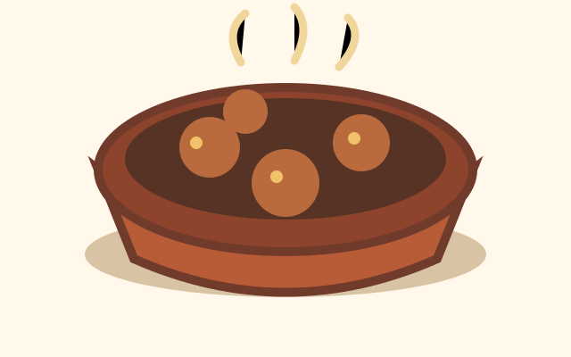
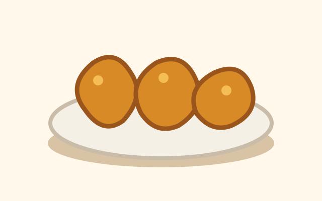
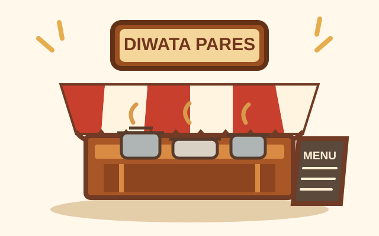

About Diwata Pares
Diwata Pares Overload became widely known for serving Filipino pares and generous meal portions. The business became popular with customers and online audiences.
Food Highlights
The food commonly associated with the business includes beef pares, rice, soup, and fried chicken.



Menu Prices
| Dish | Solo | Sharing |
|---|---|---|
| Beef Pares | ₱65 | ₱120 |
| Fried Chicken | ₱80 | ₱150 |
| Pares with Rice | ₱75 | ₱140 |
| Barbecue | ₱25 | ₱100 |
| Extra Rice | ₱15 | ₱50 |
Food items to look for
- Beef pares
- Rice and soup
- Fried chicken
- Barbecue